| Cast Party 2018 (Jp) (The BBB: Breakthrough Bandwagon Books) | |
| 清涼院流水 & 穂高 & エージェント工刀 & ターニャ | |
| The BBB: Breakthrough Bandwagon Books (2019) | |
Told by Ryusui Seiryoin, Hodaka, Agent Kunugi, and Tanya
Character Illustration by Kai Chamberlain and Polka D
Cover design by Tanya
Copyright © 2019 The BBB: Breakthrough Bandwagon Books
All rights reserved.
ISBN: 978-0-359-44305-5
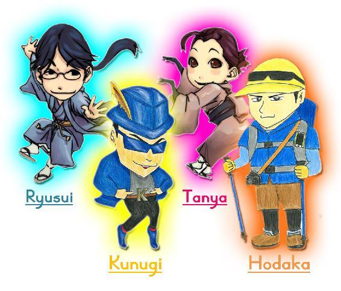
清涼院流水（以下、流水）: 皆さん、こんにちは。The BBB編集長の清涼院流水です。昨年（2017年）はThe BBBの５周年を記念してリアル・イベント「Cast Party 2017」を東京で開催し、その後、現在は日本語版のみですがeBook化もしました。「Cast Party 2017」は、なかなか良い反応が得られたので、今年もリアル・イベントを検討していたのですが、そうすると、どうしても日本人読者がメインとなってしまう点がネックでした。ほかの諸条件も鑑（かんが）みて、今年の「Cast Party 2018」は２年ぶり３回目のバーチャル・イベントとして、The BBBのCast座談会を収録することにしました。「Cast Party 2015」、「Cast Party 2016」と同様に、この座談会の英語音声は、後日、YouTubeにアップする予定です。今日の参加者は、ぼくと、The BBB校正責任者のエージェント工刀（くぬぎ）さん、チーフ・デザイナーで総務も担当しているターニャ、そして、初参加となるスペシャル・ゲストも、お迎えしています。ではまず、工刀さんから、自己紹介をお願いいたします。
エージェント工刀（以下、工刀）: 皆さん、こんにちは。工刀でございます。今年は、いろいろありまして。まあ、いろいろあるのは、いつものことなんですが、苦しい思い出ばかりで。今年は、あとちょっとですけれど早く終わらせて2019年に向かいたいな、と考えております。
流水: 今年が特に苦しかったんですか？それとも、毎年、苦しいんですか？
工刀: まあ、毎年、目指していることがいろいろありますので、苦しいのはいつものことですし、誰もが多かれ少なかれ苦しい目に遭うわけですけれども。そういった意味で、今年も例外ではなかったかな、と思います。
ターニャ: 具体的に、何が苦しかったんですか？
流水: それは、The BBBの作業じゃないの？（苦笑）校正責任者として。
ターニャ: いかがでしょうか、工刀さん？
工刀: そうですね。校正のお仕事をいろいろやらせていただいているんですけれども、それについて、なかなか確かな手応えが感じられていない、という面はあります。
流水: 校正者として、今までと違った挑戦ができなかった、ということでしょうか。こなされている作業量としては、いつも多いじゃないですか。
工刀: まあ、作業が多いというのは、皆さん、それぞれそうだと思うんです。ただ、作業量とは別に、自分が目指している校正のレベルというのがありまして、そこに向かって努力をして、でも、自分の思った通りの結果を残せていないな、というのは感じています。私が目標を高く設定しすぎているのかもしれませんが。
ターニャ: それは、英文の校正作業で、表現などを直す時に感じられるんですか？
工刀: 自分としては、「もっと自然で、適切な表現があるはずなんだよな」と感じているのに、その理想の英文が見つからずにストレスになることは、時々あります。
ターニャ: 異文化のギャップを感じられている、ということでしょうか？
工刀: そうですね。私は幼少期からずっと海外に住んでいましたから、自分の知っている海外文化と校正対象である日本文化のギャップをうまく埋めることができない、と言ったらいいんでしょうか。
流水: いきなり話が長くなっていますが、まだ自己紹介コーナーなので（笑）。そのあたりは、あとで触れられたら、また触れるとして。ターニャはまだ名乗っていないので、次、ターニャの自己紹介を、お願いします。
ターニャ: 失礼しました（微笑）。皆さん、こんにちは。The BBBでデザイン作業や総務などを担当しているターニャです。私の今年は、まず日本的には犬年（モモ年？）でした！数年前から続けてきた美術館のボランティア活動の内容が、けっこう活発になってきまして。月に２、３回くらいですが、その日は朝から夕方まで一日中、色々な方と接します。小学生のグループもいれば、ふつうの社会人の方、博物館学習を実習されている方、美術を中学や高校で教えている先生方、視覚障害者の方、聴覚障害者の方、ワンちゃん（介助犬）を連れている方などの、暗室での現像作業をお手伝いしたり、企画展で対話鑑賞を行ったり、とか。そうした活動の幅が広がりました。それと、引き続き『ポケモンGO』をやっておりまして、ただいま、私のパートナーは、クヌギダマです!!
工刀: え、そうなんですか？（笑）
流水: それは、ポケモンの名前？
ターニャ: そう。通常は緑色の松ぼっくりのキャラクターなんですけど、金色の色違いポケモンをGET。「あ、工刀さんだー」と思って、ずっとクヌギダマと一緒に歩いてまーす。
流水: あとで検索してみよう。ターニャは、美術館ボランティアを別の名前でやっているんですけれど、それが今年、『プレジデント・ウーマン』という女性雑誌で紹介されたりもしました。
穂高: あ、出てましたね。見ました、見ました。
工刀: 私も見たはず......ですが......すみません、記憶が薄れています。
ターニャ: 記事のコピーを、またお送りしますね。
流水: ターニャはThe BBBの活動以外でも、ボランティアなども精力的に行っていた、ということで。そして、今、少しお声が聞こえましたが、本日は、もうお一方、スペシャル・ゲストをお迎えしています。The BBBの読者には、『百名山ピークハント』シリーズで、おなじみではないかと思います。登山者写真家の穂高さんです！（拍手）
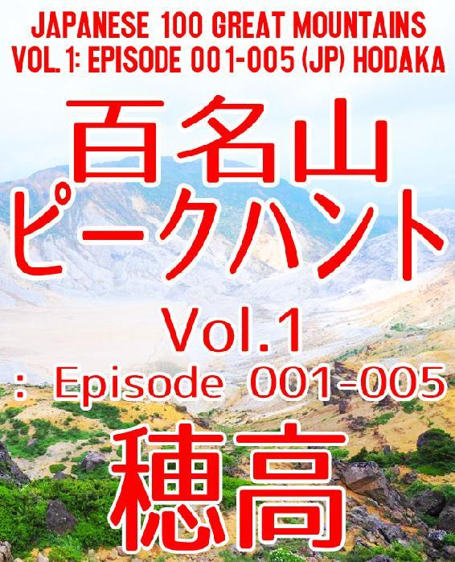
穂高: こんにちは、穂高と申します。私は、登山と写真の活動を以前から続けておりまして、少なくとも月に１、２回は山に登るようにしています。昨年、2017年の４月から日本百名山の制覇を目指して活動しています。具体的には、ひとつの山に登って、その記録を書いて、写真とともにインターネットにアップして、という形で、ライフワークとなりつつあります。実は、以前も百名山を30座くらい登っていたのですが、過去の記録はリセットして、またイチから登り始めています。2017年に再スタートしてから現在までに、20座くらい登っています。
ターニャ: おー、早くも20座！すごーい！
流水: 今回、穂高さんをお招きしたのは理由があります。ちょうど去年の「Cast Party 2017」を開催した直後に、穂高さんの『百名山ピークハント』のVol.1が出たんです。連載は、その前からしていただいていたんですが。
穂高: ああ、そうですね。
流水: つまり、去年のキャスパから今年のキャスパまでの期間中に『百名山ピークハント』シリーズの刊行が始まって、１年で３冊刊行させていただいたことになります。今年のThe BBBは、既存のシリーズの新作を積み重ねていった活動がメインで、新しい企画といえば、穂高さんの『百名山ピークハント』だけに、結果的にはなってしまったんですけれど。そのぶん、穂高さんの躍進が目覚ましくて。The BBBの無料コンテンツは、『King In the Mirror』というマイケル・ジャクソンの人生を描いた作品が大体いつもいちばんダウンロードされ続けていまして、これを超える作品は滅多に現れないのですが、先日集計した2018年６月から９月のダウンロード数で、『百名山ピークハント』のVol.2が『King In the Mirror』に勝って、その期間中、The BBB全158作品の中でダウンロード数の総合１位になってしまった、という。『百名山ピークハント』がThe BBBの頂点に立ったので、これはもう穂高さんをスペシャル・ゲストでお呼びするしかないな、と。で、穂高さんは、昔、ご本名でインタビュー（『登山と写真、そして世界遺産』参照）もThe BBBから刊行させていただいて、それも、実は今でも頻繁にダウンロードされ続けているThe BBBの人気コンテンツで。
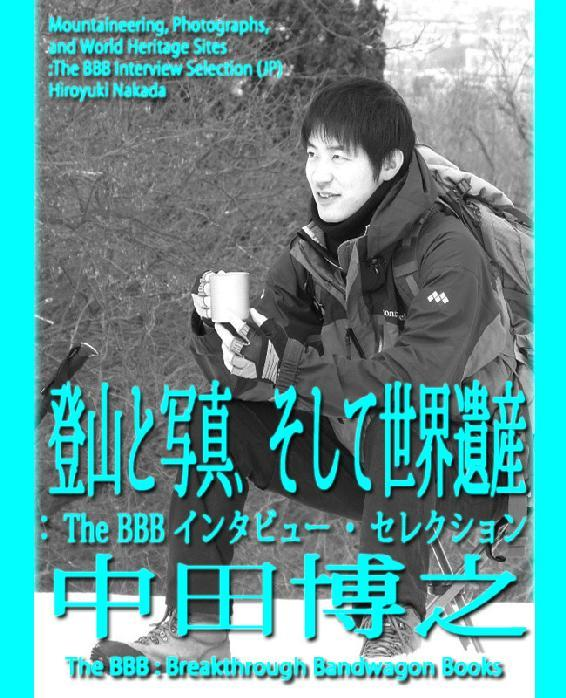
穂高: インタビューは数年前のものですが、いまだに読んでいただけている、というのは嬉しいです。
流水: 穂高さんインタビューは、ダウンロード数で言うと、日本語版はThe BBB全体の４位、英語版は９位と、安定した人気のあるコンテンツで。穂高さんは無料作品のみの刊行なので、なにも還元できていなくて申し訳ないのですが。
穂高: いえいえ、とんでもない。好きで、やらせていただいていますので、こちらこそ感謝しています。
流水: 穂高さんはThe BBBにお客さんを連れてきてくださる、本当に、ありがたい存在です。
流水: 流れ良く、このまま『百名山ピークハント』シリーズの話に入りましょう。ちなみに、ぼく自身の故郷（兵庫県西宮市）は山と海に挟まれた土地で、子供の頃はキャンプ団体にも所属していて、海に行ったり、山に行ったり、どちらも好きだったんです。穂高さんのように本格的な登山をしていたわけではないので、百名山は、ひとつも登っていないかもしれません。でも、山は好きで、穂高さんの『百名山ピークハント』シリーズを拝読していると、自分は家にいながら百名山登山を疑似体験できている、みたいな。 "バーチャル百名山登山" を満喫させていただいています。
穂高: それは本当に、嬉しい反応です（微笑）。
流水: 内容もいつもとても面白くて、感謝しています。工刀さんとターニャにも、登山、あるいは山そのものについて、この機会に伺ってみたいです。工刀さんは、何か山への思い入れはありますでしょうか。
工刀: 山と言いますか、私は今までの人生で、何をするにしても基本的にインドア派でしたので。家の中でいろんな作業をすることに慣れているのですが、ここ数年、山や海などのアウトドアに憧れたり、挑戦しようかな、とも思うことがあります。ただ、実際には、アウトドアを楽しむには、まとまった時間もお金も必要になるので、なかなか気軽には実行できずにいますね。
流水: あと、機動力も要りますよね。穂高さんの『百名山ピークハント』を拝読していると、毎回とりあえず、車でどこか途中まで行くじゃないですか。
穂高: そうですね（笑）。
流水: ぼくたち（穂高さん以外の３人）は、ふだん、車に乗らないので。まず車がないと、百名山に行くのも大変ですよね。
穂高: 車がないと厳しいかもしれないです、たしかに。
工刀: あと、『百名山ピークハント』を読ませていただいて感じたのですが、穂高さんは山でばったり出会った人に積極的にお話をされますよね？コミュ力が高い、と言うか。
穂高: たしかに、けっこう自分から話しかけますね。
工刀: それが素晴らしいと思います。私に欠けている能力のひとつで、克服したいんですけれども。アウトドアだけじゃなく、コミュニケーション能力の高さも培いたいなと思っていますので、そういった意味で登山というものを意識します。
流水: 穂高さんは、たしかに、元々、コミュニケーション能力のある方ですが、以前おっしゃっていたのは、『百名山ピークハント』の連載をするようになってから、よりいっそう積極的に話しかけるようになった面もあるんですよね？ネタ探しじゃないですけど。
穂高: その面はありますね。以前、登ったことのある山でも、新たに登るたびに違った一面が見えてくるので。天気によって印象が変わって、出会う人も毎回違うわけで。百名山に登る人は山好きが多いので、山の話になると、好きな人は止まらないです。
流水: 他の登山家の方たちと情報交換もされているんですよね。
穂高: はい。他の方から聞いた情報を参考に、次に登るところを決めたりとか。私の登山スタイルは、連載を始めて、だいぶ変わりましたね。以前は、頂上だけ制覇して、という感じで登っていたんですけれど、今は事前にけっこう計画を練って。どういうルートで行こう、とか丁寧に調べるようになって。その上で、予期せぬアクシデントがあった時には、それも面白がれるような考え方になって。
流水: 『百名山ピークハント』シリーズのあらすじで、いつも「筋書のないドラマ」と書かせていただいているんですが、偶然の展開を大事にされている感じは、ものすごく良く出ていますよね。天気が悪くて登る山を急に変えたり、とか。そういう計画されていない展開こそ面白く感じられるんです。では、ターニャからも山について、何かあれば。
ターニャ: まず山についての思い入れとしては、私は幼いころから中学生くらいまで、毎年必ず夏にキャンプに行っていました。アウトドアは元々、かなり好きです。手で細かくちぎった新聞をくるんでイカを作って、薪（たきぎ）を組んで、火を焚いたり。キャンプファイアでマシュマロを食べるとか。実は私、大人になるまで海で泳いだことがなかったんです。泳ぐ場所は必ず、キャンプで訪れた川か湖で。なので、泳ぐのは山、というイメージで。ふつうは泳ぐのは海だと思うんですが。それと、もうひとつ、キャンプに行くと恒例の「肝試し」という行事がありまして。そういう時は、いつもミステリアスな体験に遭遇します。今日は話さないですけど、機会がありましたら、怖い話がお好きな方にはお話ししたいと思います。
穂高: えー、それはすごい！興味あります。
流水: それを聞いて思ったのは、工刀さん、アメリカなどでも「肝試（きもだめ）し」の風習はあるんですかね？そもそも「肝試し」を知っていますか？
工刀: 「肝試し」は知っていますが、その文化が欧米にあるかと聞かれると......。それに当たる言葉があったような気はするんですが。
ターニャ: ちなみに、ホラー映画『リング』のハリウッド版で出てくるロッジにも、キャンプに行きました。オレゴン州です。
穂高: そうなんですか？
流水: 工刀さんは、流行っていた頃、日本にいなかったので、『リング』は知らないんじゃないですか？鈴木光司先生の大ベストセラー・ホラー小説で、日本だけで何百万部も売れる社会現象になったんですが。
工刀: その映画がハリウッドで映画化されたことは、なんとなく知っています。
ターニャ: TVの画面からね......出てくるんですよ......。
穂高: そのロッジで、何か起きたんですか？
ターニャ: オレゴンの国立公園内のロッジで泊まった夜、ちょうど友達と（ハリウッド版の）『リング』を観てたんです。
穂高: え？それは、関係ある作品として、あえて観てたんですか？
ターニャ: いえ、知りませんでした。まったくの偶然で。みんなで観ていて、「なんか、ここ、似てるよね」、って（笑）。で、あとで調べてみたら、撮影場所だったんです。
穂高: うわー（笑）。
ターニャ: 単なる偶然で、ホンモノには遭わなかったので、かわいいネタなんですけど。
流水: でも、映画を撮影していたとしても、そこが心霊スポットというわけじゃないんだよね？
ターニャ: まあ、心霊話がお好きな方は、またいつか、「ターニャの肝試し特集」ででも。
穂高: それは楽しみです。
流水: たしかに、そういう連載があっても良いかも。
工刀: そっちのほうが、『Towerld（タワールド）』より売れそうな気も......（苦笑）。
流水: いやいや、それは困りますよ（笑）。
ターニャ: ともかく、穂高さんの『百名山ピークハント』は写真も綺麗だし、さっきも流水さんが言っていたように、自分が登っているような感じになる。山頂の雰囲気を感じられる、という。もっともっと山の景色を見てみたい、という気持ちと、登山開始から頂上に行くまでのプロセス。また、頂上から帰宅までのプロセス、というのが、臨場感あふれる感じで伝わってきます。気持ちが、すごくワクワクします。
穂高: ほんとですか。それは嬉しい。ありがとうございます。
流水: 電子書籍版でも、かなりたくさんの写真を使わせていただいているんですが、穂高さんのブログ（http://hodakaclimber.blog.fc2.com）では、さらにたくさんの写真が紹介されていますので。この電子書籍をお読みいただいている方は、ぜひ、穂高さんブログも御覧いただきたいなと。
工刀: ブログですね。なるほど。やっぱ写真のパワーか。
穂高: ブログの写真も、ほんの一部なんです。どの百名山でも、毎回400-500枚は撮っていると思います。なんだかんだで。
流水: それだけ写真が多いと、管理するのが大変そうです。
穂高: いやもう、管理は簡単で。日付と山の名前を入力して、Excelで表をつくっていますけれど。
ターニャ: 穂高さんに質問があります。穂高さんの「登山７つ道具」みたいなものは、あるんですか？絶対これは持っていくぞ、みたいなアイテム。
工刀: 熊よけのベルとか？
流水: 出てきましたね。熊よけのベル（『百名山ピークハントVol.2』の「Episode 007 武尊山（ほたかやま）」参照）。
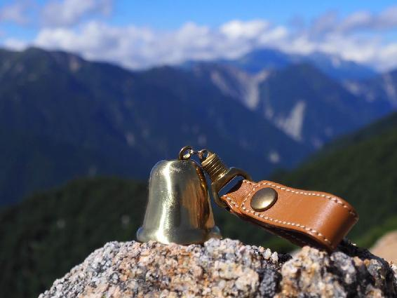
ターニャ: そうそう、そういうのがあれば、教えてほしいな、と。
穂高: 熊よけのベルについては、熊に遭遇しかけたことが２回くらいあって。でも実は、熊よけのベル、あんまり意味がなくて......。
ターニャ: えっ!?（笑）
工刀: 意味ないんですか？（笑）
穂高: 熊はもう、ベルに慣れちゃってるんで......。
流水: ダメじゃないですか！（笑）
穂高: あまり意味ないよ、という話も聞いて。
工刀: 連載を読んでいると、「あー、熊よけのベル、必要そうだな」と思ってましたよ。
穂高: お守り的な意味はあって、安心はするんですけど。けっこう持って行くのを忘れちゃったりとか。
流水: 連載で紹介されていた、パンの空袋を破裂させて熊を驚かせる、という方法は効くんですかね？
穂高: あれは一瞬なんですけれど、熊を驚かして......。
流水: 一瞬だったら、そのあと、殺されるじゃないですか！（笑）
穂高: 熊が逃げてくれるといいんですけど。あとは、ペットボトルをベコベコ鳴らしながら行くとか。「登山の７つ道具」......何でしょうかね......ありきたりですけど、地図と......。
流水: 方位磁石は使うんですか？
穂高: 方位磁石は、実際には、あまり使わないですね。昔、地図に合わせて方角を調べる方法も学んだんですが、だいたい、今は使わなくても、道も整備されているので。スマホで方位磁石もありますし。
ターニャ: あー、たしかに。スマホにGPSありますよね。
流水: スマホは、山の上でもつながるんですか？
ターニャ: 富士山は、つながりますよ（※ちなみに、登山ルートのガイドアプリもあります）。
穂高: 山の上は、わりと、つながることが多いですね。逆に、麓（ふもと）のほうが意外につながらなかったり、とか。
工刀: へー、そうなんだ。
穂高: あとは、カメラは、絶対に外せないですよね。
流水: 雪山だとアイゼンとか......。
穂高: はい。強いて言うなら、欠かせないものは、地図、カメラくらいですね。
流水: テント泊する時には、テントなどの必需品が、いろいろありそうですけど。
穂高: あと、ヘッドライトとか、そうした小物ですね。
流水: ところで、穂高さんが以前、百名山を30座くらい登られていたというのは、だいたい関東圏の山ですか？
穂高: だいたい関東圏で、いちばん遠くて、九州の祖母山（そぼさん）かな。そこに１回だけ登ったことがあります。
流水: 百名山って、関東に多いんですよね？関東というか、東日本というか。だから、関東在住の人じゃないと、全山制覇は難しいんじゃないかな、と以前から思っていて。
穂高: それは、けっこう指摘されます。前、山で出会った山口出身の人にも言われたんですが（『百名山ピークハントVol.1』の「Episode 003 天城山」参照）。
流水: 連載で出てきた例の人ですね。
穂高: 例の剣道８段の人です。関東に住んでいて羨ましいね、というのは言われました。
流水: でも、あの方は、山口在住でも96座くらい登ってませんでしたっけ？
穂高: そうなんです。昨年（2017年）中に制覇する、という時にお会いしたんですが、彼が途中で足を痛めちゃったらしくて、来年（2019年）の達成になるようです。百名山の分布は、関東と長野、上信越あたりで63座くらいあって。北海道に9座、東北地方で14座、中国・近畿で6座、四国に2座、九州に6座、という感じで。
流水: 西日本は、かなり不利ですね、西日本に住んでいる登山家は、かわいそうです。
穂高: ええ。やっぱり、関東・長野あたりに集中しているんで。そのあたりを一気に登っちゃいたいな、と。
流水: でも、一気に関東圏を登っちゃうと、あとになればなるほど、大変になるんじゃないですか？
穂高: そこは、難しいところですね。
流水: そのあたり、どうされるのかな、という心配もあり。今はハイペースで登られてますが。
穂高: 今は日帰りで登れる山が多くて、かなり登りやすいですね。
流水: 北海道が９座でしたっけ？
穂高: ９座ですが、たぶん、１回では......。
工刀: １回で制覇するのは無理でしょう。１回に１座か、せいぜい多くて２座でしょう。一気に９座も登ったら、途轍もない超人ですからね。ギネスに載りそうな。
ターニャ: 私は知識がないのですが、百名山は独立峰が多いんですか？それとも、山脈の一部が多いんですか？
穂高: 北アルプスとか南アルプスになると、連峰みたいに連なっている山が多いので、1回の登山で縦走する形で、いくつか制覇できます。地方は、わりと独立峰が多いかもしれません。
ターニャ: それこそ、北海道なんて点在してるから......。
流水: そう。だから、どう登れば良いのかな......と、気が遠くなりそうで、そこは想像を絶します。麓まで行くだけでも絶対に大変ですからね。
穂高: 今、いちばん北にあるのが、稚内（わっかない）の横の利尻島（りしりとう）にある利尻山（りしりざん）です。
ターニャ: あー、ありますよね。島が。
工刀: 島に百名山があるんですか？
穂高: で、あと、最南端が屋久島にあって、宮之浦岳（みやのうらだけ）というのですが。
ターニャ: じゃあ、縄文杉を楽しみながら。
穂高: 100座めは、そのどちらかを最後にしようと思っていて。
流水: それは、いいですね。
工刀: ちなみに、富士山も百名山ですよね？
穂高: そうです。
流水: 富士山は最後か、50番目とか、そういう節目になるのかな、と思っていました。
穂高: 富士山は、けっこう登ってるんですけどね。紹介するのは50座めくらいですかね。
流水: 100座めのお話は、今、初めて聞いて知りました。まあ、100座めは、利尻島か屋久島、どちらかでしょうね。あるいは、思い切り近場を残しておくか......。
穂高: それも面白いですね（笑）。
ターニャ: 屋久島のほうが、定期船や現地でのお食事、宿泊にも規制があるし、北海道より大変なんじゃない？
流水: 最後に大変なことをするか、それともラクなほうを選ぶか、ですね。
穂高: やっぱ、最後は大変なほうがいいですね。達成感がある感じで。
工刀: そうですよね。最後は、ゲームでいうところのラスボスみたいな存在であってほしい、という願いが読者としてもあります。そこが近場だとラスボス弱かった、みたいなガッカリ感が。
流水: 今までの連載では、西日本って、ありましたっけ？
穂高: 今のところ、ないんですよね。
ターニャ: 西日本と北海道は、まだですよね。
穂高: 今年の夏、あまり登れてなくて、けっこう台風が多かったので。ほんとは、もっと登れる予定だったんですけど。なかなか天候に恵まれませんでした。
流水: 百名山の雪山が冬季に閉鎖されることは、あるんですか？
穂高: 閉鎖は、あまり聞かないですね。基本、自己責任という感じで。やっぱ、冬山登山は、それなりの技術とかが必要になってくるので。
工刀: 冬山は危険そうなイメージがあります。
流水: でも穂高さん、連載では雪山ばっかり行ってるイメージが。
穂高: あれは雪山の中でも比較的、登りやすかったり、ルートがわかりやすかったり、という山なので。北アルプスの危険な山は、やっぱり夏にしようかなと。
流水: 連載を拝見していると、穂高さん自身が「これはラクな山です」と書かれていることが今のところは多くて。ラクなところから攻めていったら、あとが大変なんじゃないかな、と心配な面はあります。どんどん大変になっていく、というか。そのぶん記事としては読みごたえが増すと思うんですが、後半になると、かなり大変そうだな、という心配が。
穂高: 自分では、あんまり心配していなくて。これまでのラクな山にしても、危険な場所がない、という意味でのラクさで。やっぱり、それなりに疲れたりはしますし。
工刀: 体力は、けっこう使うでしょうね。われわれインドア派の想像を絶します。
穂高: 特にテントとか持って行くと、重量がかなり増えるんで。体力は使いますね。あと、エリア的に、北アルプスとかのほうが、コースがわりと崖を登るような感じなので。そこは、かなり危険だと思います。
ターニャ: 気をつけたほうがいいですよ、絶対。
穂高: 行くと、男女問わず、ひとりで登っている人が多いです。
流水: 『百名山ピークハント』シリーズは今後も楽しみですが、危険がつきものなので、そこだけ心配ですね。
穂高: もちろん、安全第一で。
ターニャ: 私たちも、穂高さんが完走する姿を見たいですからね。
工刀: お気をつけていただきたいです。
穂高: 自分の技術と相談して、登る時期も調整したいです。ちょうど先週、浅間山に登ってきたんですが、浅間山は今年の８月に火山の規制がレベル１に引き下がっていまして。今、もう噴火口の近くまで登れるようになったんですが、規制解除されたのが３年ぶりということもあり、平日にもかかわらず、かなりの人が登っていましたね。
流水: そういう情報は、チェックしていないと、わからないですね。
穂高: 逆に今度、草津白根山が１月に噴火して、今、また規制されているのかな。そういう火山とかのタイミングが今後どうなるか、今はまだわからないので。
流水: 実際、大噴火するケースがありますよね。御嶽山（おんたけさん）とか。噴火で亡くなられた方もいますし。
穂高: 御嶽山も、今年、何日間かだけ頂上まで行ける期間があったみたいで。かなりの人が登られたようです。
流水: そうした情報が掲載されているウェブサイトのようなものが、あるんですか？どういうところから情報収集されているんですか？
穂高: 情報は、山に特化したSNSみたいなものがありますね。あとは、よく山に登る人のブログを拝見したりして。ブログが多いかもしれません。登山される方たちのブログを見ていると、こういうコースで登ったらいい、とか、具体的にイメージしやすいので、けっこう参考にさせてもらっています。
流水: 山で登山者の方に会った時に、『百名山ピークハント』の連載の話をされることは、ありますか？それとも、秘密にされていますか？
穂高: 特に秘密にはしていないですけれど、自分の周りには山に登っている人がいないので、あまり周囲では知られていないんです。山で会った人たちには、けっこう積極的に、連載のことは話します。
流水: それはいいですね。あと、穂高さん、インスタグラムをやられていますが、The BBB関係者では、ほかにインスタをやっている方がいなくて。穂高さんの英語版に反響があったのは、インスタの影響かなと。
穂高: インスタの反響は、そうとう大きいと思います。今年の春くらいに始めて、定期的に山の写真などを載せています。それまでインスタをぜんぜんやったことなかったんですが、他の人も、山に限らず、いろんな写真を載せていて、しかも、写真のクオリティがどれも凄いので、見ていて飽きないです。そこにハッシュタグをつけて、どんどん世界に広がっていったりするので。私がインスタのページにThe BBBへのリンクを貼っているので、そこから来てくれているんじゃないかなと。
ターニャ: それは、The BBBとしても、今後の展開のヒントになるかもしれないですね。
穂高: インスタで写真をアップすると、ほんとに、どんどん「いいね」がついてくるので。
流水: ただ、それは穂高さんには「山」という武器があるからで。さっきの工刀さんのインドア派の話じゃないですけど、ぼくも毎日、ひたすら家での中で仕事をしているだけなので、 "インスタ映え" するものは、日常生活の中になくて。一日中、英語漬けなんですが、さすがに英文の画像を投稿するわけにはいかないですからね（笑）。
工刀: 画像のパワーは、やはり侮れないですね。
流水: それは穂高さんが身をもって証明された、というか。ターニャは個人的にtweetもしていますが、画像つきのものが多いですしね。The BBBのFacebookも、テキストだけの投稿と画像つきでは反応が違います。インスタは特に、画像に特化したものですよね。
穂高: はい、そうですね。
流水: われわれのやっている電子書籍とインスタは本来、あまり相容れないのかもしれないですけれど、穂高さんは、たまたまそこにハマった、ということですね。The BBBのダウンロード数で『百名山ピークハント』が総合１位にもなって、結果にもつながっている、という。その意味でも、The BBBにとって、すごくありがたい存在で。
穂高: インスタで、ひとり、気になる外国人の方がいて。先日、新潟のほうの山に登った時に、写真を上げたらコメントがついて。その方も、同じ日くらいに登ってて、ニアミスだったね、みたいな会話を少ししたんですが。その後、彼が百名山の写真を、けっこうアップしていて。たぶん、いまだに登っているんですよ。で、わりと長野とか関東とか、そのあたりにいるので。いつかコンタクトをとって、都合があえば一緒に登れたらな、と。
流水: その方には、ぜひ、『百名山ピークハント』は読んでほしいですね。英語版がありますし。今まで、連載の中では、外国人と山で会われたエピソードは出てきていないですよね。
穂高: これまで登ってきた中では、山では、あまり会っていないですね。連載が始まってからは。
流水: 会ったら、絶対に書きそうですもんね。今後、海外の方との出会いのドラマがあるのか、とても楽しみです。
穂高: 富士山とか、アルプスの上高地とかは、かなり外国人もいると思います。
流水: 富士山は絶対に多いですね。じゃあ、富士山は100座めにしないほうがいいのかな？最後に外国人と出会っても、その続きを読めないので（笑）。
穂高: ほんとは今年、登る予定だったんですけど。それもちょっと天気と都合があわなくて。
流水: ぼくは、北岳というのさえ知らなかったですよ。
工刀: 日本で２番めに高い山なんですよね。なぜか中学生の時にそれを知りましたが。
ターニャ: 富士山があまりにも有名すぎて、２番めは、あまり知られていないと思います。
穂高: 山に登っている人くらいしか、知らないかもしれませんね。
流水: ちなみに、穂高さんは連載で武尊山（ほたかやま）に登られましたけど、あれは、お名前の由来は別なんですよね？
穂高: 名前の由来のほうは、アルプスの穂高岳（ほたかだけ）です。それこそ、日本で３番めに高い山で。
流水: その穂高岳も、穂高さんにとっては重要なだけに、富士山同様、いつ登られるのか、というのは気になるところですね。
工刀: 穂高岳は、富士山なみに重要でしょう。楽しみです。
穂高: 私の気になっている山は、中国地方の大山（だいせん）で。これが今年、開山して1,300年で、けっこう登る人が多いという話で。できたら今年のうちに行きたいな、とは思っているんですが。
流水: 大山は、実は自分の小説でも出したことがあるのですが、ぼくは、中学校の旅行で行きましたよ。あれも百名山だったんですね。
穂高: えー、ほんとですか!?
流水: 出身が兵庫なので、実は、わりと近いんです。
穂高: どんな感じだったか、おぼえてますか？
流水: それが、大山に行ったものの、大雨で登山が中止になってしまって、旅館にあったゲームセンターに入り浸ってました（笑）。なので制覇したとは言えないです。
ターニャ: 鳥取県ですよね。東日本からだと、どう行けばいいんですか？
流水: 鳥取と島根は新幹線が通じていないので、行きにくくて。中学校の時には、兵庫からバスで行きました。工刀さんは、鳥取と島根の違い、わかってますか？
工刀: それは、さすがに（笑）。海外で暮らしている時から、日本の地理では誰にも負けていませんでした。
ターニャ: 今、ちょっとスマホで調べてみたら、飛行機で米子空港まで行けばいいみたい。羽田から直行便があります。百名山は、子供とか、体力のない方にとっては、登るのは大変なんでしょうか。
穂高: 標高が高くなって、それなりに危険な山は、子供は難しいでしょうね。子供は、まず見かけないですね。関東の2,000メートルに満たない山だったりすると、けっこう親子連れでいますけど。
流水: でも、連載では、小学生の集団がぞろぞろ来た話、ありましたよね。
穂高: あれは遠足で来ていた感じで（笑）。
工刀: 遠足で百名山というのも、何だか豪華ですね（笑）。
穂高: 小学生にはきついんじゃないかな、と思うんですが。
ターニャ: 犬を連れている人に会ったりもしますか？
穂高: Episode 19の那須岳では、犬を連れている人がいました。そういうところは、駐車場からあまり激しくない道なので。
流水: 今後も、じゃあ、近場の山から攻めていかれるおつもりですか？
穂高: いえ、機会がつくれたら、そこは、あんまりこだわらずに遠くにも行きたいなと。近場は日帰りで行けるところが多いので、あえて候補に残しておく、ということも考えてはいます。遠征が難しい時期には日帰りで登って記事にしたい、と考えていますので。ほんとに近場をぜんぶ行っちゃうと......。
流水: それは追いつめすぎでしょう！（笑）あと、百名山の暖簾（のれん）を購入されて、ピンバッヂをつけていく、という企画があるじゃないですか。（『百名山ピークハントVol.3』の「Episode 011 大菩薩嶺（だいぼさつれい）」参照）。あれは、すでに登った山は、一応、ピンバッヂは、ぜんぶあるんですか？
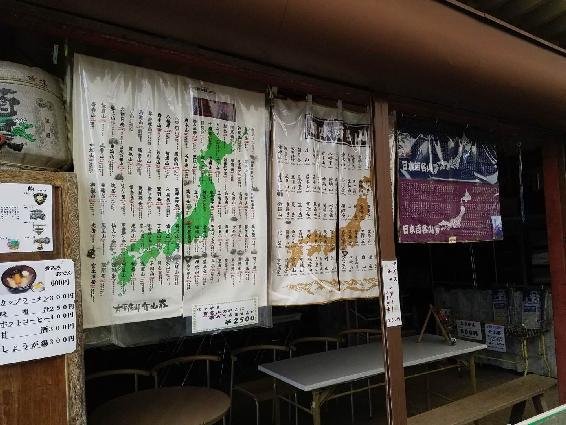
穂高: 連載では、今、20座くらい登って、まだ買っていない山が５、６座はありますね。平日に登ると、売店が開いていない時もありますので。
流水: お店が開いていないこともあるのは、ハードル高いですね。もし今、登った山がぜんぶそろっているなら、毎回、eBookの巻末に「今、ここまで進みました」と紹介するのも面白いかな、と思ったんです。
穂高: 今は揃っていないですが、どこかのタイミングで載せるのは、良いかもしれないですね。１度、ぜんぶのピンバッヂをそろえた方の写真をSNSで見て、圧巻でしたからね。
ターニャ: ネットの通販で買えないのかな？（笑）
流水: いやいや、それは価値がないんじゃない？（笑）やっぱり現地でも買わないと。でも、そうすると、地方遠征の時は、ピンバッヂを必死で購入しないといけないですね。何度も行けないでしょうから。
穂高: ネットで買えるのは知ってたんですけど、やっぱ現地で買いたい、というのはあるんで。
工刀: そこは現地で買ってこそ、ですよね。
ターニャ: ところで、穂高さんは、毎回、地図を持っていかれると思うんですけど、地図には何か書き込みとかされますか？
穂高: 書き込みは、特にしないですね。
ターニャ: 広げて見るような感じですか？
穂高: 一応、紙の地図は持って行くんですが、だいたい登る前にスマホで写真を撮って、登ってる最中はスマホの地図を見て行くので。紙の地図は、休憩で時間がある時にゆっくり見るとか。あとは泊まりで行った時に夜にじっくり見るとかですね。登ってる最中に広げることは、あまりないです。
ターニャ: どうしてお聞きしたかと言うと、地図に赤字などの書き込みがあったら画像で見たいなと。こういうルートで登ったんだよ、みたいな。
流水: まあ、でも、穂高さんは、それはしていないようだから、ご自身のスタイルを変えて、やっていただくわけにはいかないし。
穂高: 百名山は、だいぶ整備されてるんで。あまり道に迷うことはないですね。やっぱり、登る人も多いんで。ルートで迷うことはないです。
流水: 百名山をすべて制覇する人って、どのくらいいるんでしょうね。努力も必要ですが、環境にも恵まれていないと難しそうです。東日本に住んでいる、とか。
穂高: あと、時間的なこととか。
工刀: 家族や周囲の人の理解も要りそうですし。
穂高: 体力的なことも、ありますけれど。
ターニャ: いつ頃、コンプリートしようと思っているんですか？
穂高: 去年（2017年）から始めて、10年はかからないうちに、ってとこですかね。10年以内に、というのは、何となくあります。目標というか、目安としては1年10座ですね。ただ、アルプスとかは密集していますので、１回の登山でいくつも登れちゃうところもありますし。今（2018年12月現在）、The BBBのFacebookでは19座めを連載中ですが、実際には20座めまで登っています。なので、あと80座ですね。
工刀: ちょうど５ぶんの１の節目ですね。
ターニャ: まだまだたくさん読めるのが、楽しみです！
流水: 穂高さん、百名山の楽しいお話を、ありがとうございました。それでは、今年のキャスパの後半として、The BBB全体の話に移りましょう。
流水: 新たにスタートした『百名山ピークハント』を除くと、2018年のThe BBBは、これまで刊行してきたシリーズの新作をいつも通り積み重ねた、というだけの年になってしまいました。工刀さんが代理人をされている『Towerld（タワールド）』シリーズは、来年には、ついにLevel 0020の大きな節目に達する、ということで。20作ともなると今から読者に入っていただくのも、それなりに大変になるので、新たな試みとして、『Towerldコンプリート・ガイド』を無料コンテンツとして作成してみようかな、と計画しています。Level 0001から0020までの読みどころを整理して紹介したり、登場人物紹介とか。それと、今も無料で読めるLevel 0001-0003をコンプリート・ガイドの中にも収録して、それ１冊で『Towerld』のことがわかるようにしたくて。
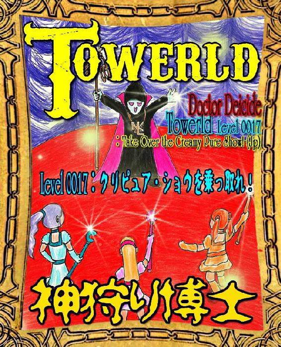
工刀: なるほど。無料３作を再収録し、20作のダイジェストもついて、しかも無料と。それで入りやすくする感じですかね。
流水: これがうまくいけば、積木鏡介（つみき・きょうすけ）さんの『都市伝説刑事』シリーズが次回「事件６」で完結する時にコンプリート・ガイドをつくったり、秋月涼介（あきづき・りょうすけ）さんの『The Gifted（ザ・ギフティッド）』シリーズがVol.10の節目に到達した時にコンプリート・ガイドをつくる、ということもできると思うんです。ところで、穂高さんに伺ってみたかったのは、お忙しい上に休日は登山があるので、小説を読む時間は、なかなかないですよね？
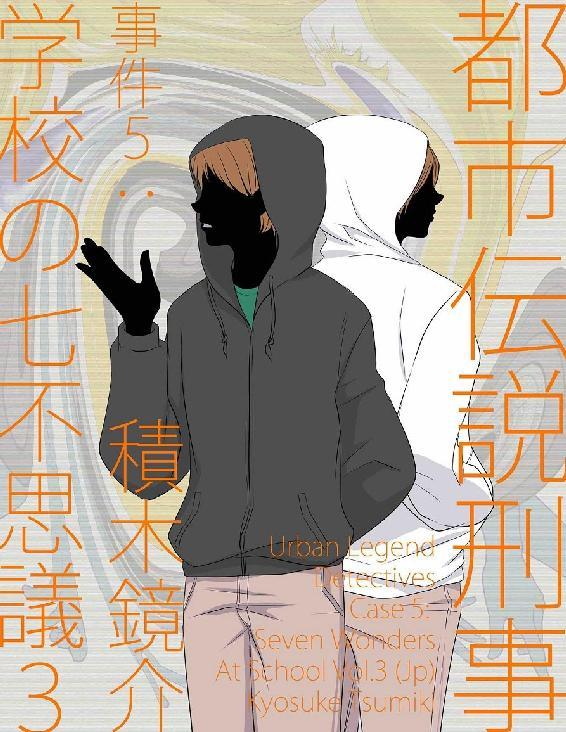 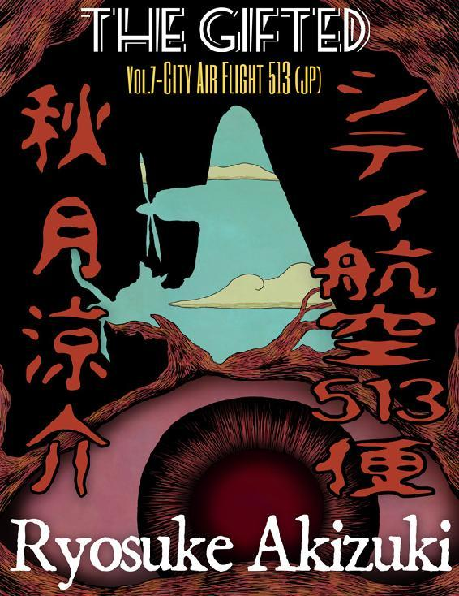
穂高: 元々、本を読むのは嫌いじゃないんで、読む時には読むんですけれど。でも、やっぱり通勤時間だけだったり、とかなってくると、忙しい時は読めないことが多いですかね。
流水: 学生時代はけっこう小説を読んでいたのに、社会人になると忙しくて読めなくなる、という話をよく聞くんです。で、The BBBの主要Castとしては、いい年の作家さんたちが中心で、読者層も、いい年の方たちなので、あまり読まれないのか、と。そこをどうクリアするか、なんですけれども。どう若い子に届けるかですね。The BBBの課題としては、イベントを開催しても、関係者が "おっさん" ばかり、ということで（苦笑）。まあ、紅一点のターニャはいるんですけれど。The BBBには女性の参加者とか若手もいなくはないのですが、表に出てこられる人が少なく、限られているんです。作家さんは、「人前に出たくない」とか「顔バレNG」という人も、けっこういますので。あと、桜井亜美さんなどは、呼べば来てくれると思うんですが、世界観が強すぎる方なので、キャスパが "桜井さんワールド" になってしまいそうなので呼ぶのをためらう、とか（笑）。
穂高: えー、そんなに世界観が強い方なんですね（笑）。
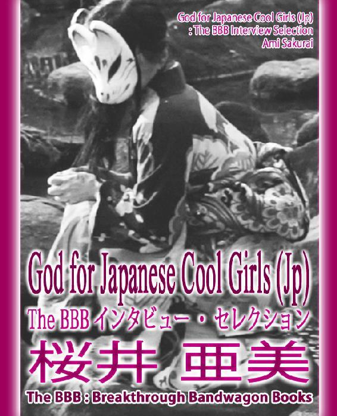
工刀: 社会人になると小説を読まない、というお話ですけれど、じゃあ、若い人が小説を読んでるか、というと、どうでしょうか。若い人は小説を読まない、文章も読まない、文字と接していない、という印象を受けます。若者の「文字離れ」と言うんでしょうか。小説を読まない人に小説を出しても、それは売れないだろうと、最近、感じています。
流水: そのあたり、実は先日（2018年11月3日）、蘇部健一（そぶ・けんいち）さんと早稲田大学で講演会した時にも話が出たんです（https://youtu.be/CktsktMl7R0 ）。結局、若い子もインスタグラムやらLINEやらTwitterには時間を割いていて、みんな、そっちに時間をとってるんですよね。ぼくも、去年、母校の高校に招かれて、文芸部の子たちとしゃべったんですが、みんな、文芸部だけどLINEばっかりやっていて本を読んでいない、とか言ってましたからね。
工刀: 文芸部でさえ、そうなんですか。
流水: まあ、読んでる子もいるでしょうけど。昔は、小説のライバルは小説だったんですが、今、小説のライバルはSNSとかYouTubeなんですよ。そっちとどう戦うか、という。工刀さんのおっしゃる通り、ある面では「文字離れ」「活字離れ」は正しいんですが、同時に違うのは、今って、"人類史上、もっとも文字を読んでいる時代" だとも思うんです。というのは、メールやTwitterは、みんな、やっているんです。で、それらも文字ではあるんですよ。
工刀: あー、たしかに。メールやTwitterも文字ですよね。
流水: なので、「小説離れ」は正しいんですが、「文字離れ」は厳密には少し違うかなと。文字は離れていなくて、むしろ、メールやSNSがあるぶん、ぼくの若い頃より、みんな、はるかに読んだり書いたりしてるんじゃないかと。ただ、それがTwitterのように文字数が少ないものが中心なので、よりいっそう小説のように分量のあるものは読めなくなってしまっている、という。実際、Twitterで、ある人が「ぼくはTwitterの文字数に慣れすぎて小説のように長いものを読めないのですが、どうしたらいいですか？」と悩み相談しているのを見たことがありますし。それが、現代のリアルな読者なので。だから穂高さんの『百名山ピークハント』みたいに、「これはバーチャル登山で楽しい！」というコンテンツは、わりと入ってきてもらいやすいんですけど、『Towerld』みたいにノリがガチで、重厚で読ませるタイプの王道の小説は、それを求める読者がどこかにいるとしても、数が昔より減っているのは事実でしょうね。真剣に小説を読む層、というか。
工刀: それは、間違いなく減っていると思います。
流水: 電車に乗っても、昔は文庫本を読んでいる人が多かったのに、今はスマホでゲームやったりLINEやったり、という人が多い印象を受けます。
工刀: 先ほどの私の言葉を訂正すると、若者の「文字離れ」ではなく、「長文離れ」ですね。長い文章を読めない傾向にあると思います。メールとかの短い文章で、３行が限界という話も聞きました。最近の若い人たちは、"Attention Span"（＝集中を継続できる時間）が短くなってきているらしいんです。
流水: それだと小説は読めないですよね、絶対。３行が限界だったら（笑）。
工刀: そこなんですよ。小説は長文の代名詞。そこで『Towerld』などの小説は、読者層というか、若い人たちの需要に応えていないのかな、という気はします。Attention Spanが短くて長文を読めない、という問題は、海外も同じように......いや、海外のほうが酷いかもしれないです。
流水: たしかに、スマホやSNSが現在のこういうトレンドをつくったわけで、そう考えると影響は世界的であるはずですよね。日本だけじゃなくて。そこは、時代の流れである以上は、どうしようもないのですが。われわれ小説を届ける側としては、穂高さんのコンテンツでThe BBBに遊びに来てもらって、ついでに小説を読んでもらう、という戦略くらいしか今は取れていないんですが。
穂高: 若者の小説離れは実感していますけれど、漫画は、たぶん、今でもすごい好きなんですよね。漫画は、けっこう、電車で読んでる人も見かけるし。けっこう売れてる、とも聞きますし。
流水: 漫画は、電子書籍のほうが紙の本より売れてますからね。
穂高: 文字数が少なかったり、絵で入ってくるから読みやすい、というのがあるんですかね。
流水: 絵の力は大きくて、だから、小説は、漫画にもアニメにもゲームにも負け続けているんですよ。小説だけ "ひとり負け" みたいな感じで。ターニャは、そのあたりについて意見は？
ターニャ: 今、TwitterとかFacebookとかで、ひと筆描きみたいな絵を描いて４コマ漫画というのが爆発的に流行っていて。それも、プロではなくアマチュアの人が趣味程度に描いちゃった、みたいな。そういう感じで、だれでもSNSを使って漫画家になっちゃう、という風潮があって。思いつきなんですけど、そういうサラサラと線画でWeb連載をするのもアリだし、逆に、吹き出しだけの４コマ漫画というのもアリかなと。ポエムみたいになっちゃうかもしれないけど。セリフだけの４コマでオチがつく小説みたいな連載があってもいいんじゃないかなと。
工刀: 俳句とか短歌みたいな？
ターニャ: そう、そんな感じ。しりとりみたいな。
穂高: しりとりは面白いですね（笑）。
流水: 結局、長文での勝負を放棄する方向になっちゃうんですかね。
工刀: 長文は続けていいと思います。長文を続けつつ、３行以内みたいな短いコンテンツも、可能性としてはあるかもしれませんね。
流水: "瞬間芸" みたいな小説を、うまく実現できたら、面白いかもしれないですよね。たしかに。
穂高: 流水さんが早稲田の講演会で話されていた、カイ・チェンバレンさんとの漫画を思い出しました。以前やっていて、海外からの反響が多かったという。
流水: 漫画は、やっぱりすごくて。カイ・チェンバレンと『Teriyaki Girls』という４コマ漫画を昔、やっていましたけれど、ただ、漫画って、時間がかかるんですよね。カイも４コマ漫画をひとつ描くのに、たしか毎回最低24時間はかかっていたはずなんですよ。
ターニャ: 今、流行っているのは、ああいう描き込む絵じゃなくて、ほんとに線画で。一筆で描けるようなやつで、短いスパンで小さなコマを、どんどんアップしていくのが流行っているから。
流水: とにかく、今の時代、みんな、その瞬間瞬間で楽しみたいんだよね。刹那的、というか。
ターニャ: キャラクターが３人なら３人だけそのキャラを描いて、動きとかなんにもなく、それで切り貼りして４コマという感じでやったら、コストもかからず、早くできるかも。
流水: とても参考になる意見だと思います。それで思い出したのは、今日は、柴犬モモのシリーズについて話しておきたくて。『百名山ピークハント』シリーズも非常に好評なんですが、『モモの世界遺産旅行記』シリーズが去年、『モモ旅』というタイトルでリニューアルしまして。シリーズものの宿命として、『モモの世界遺産旅行記』シリーズは巻を追うごとにダウンロード数が減り続けていたのですが、『モモ旅』としてリニューアルしたら、ダウンロード数がV字回復に成功しました。しかも、海外のAmazon.comで好意的な書評がついたり。ターニャのアイディアで、『モモ旅』では日本各地の世界遺産について、地図とか関連情報もつけてるんです。その情報が「教育的で、タメになる」とネイティヴが絶賛してくれて。なぜこの話をしたかというと、モモって、毎週連載していまして、あれって実は、瞬間芸なんです。Facebookの連載として比較しますと、『百名山ピークハント』のほうが続きもので長文なんですけど、『モモ旅』は毎週、世界遺産の場所にモモが写っている写真画像を見せて、ストーリーは、それこそ数行だけですから。あれは、今日の話の流れで言うと、いちばん現代的な感じのコンテンツなのかもしれません。モモ関連のコンテンツは実際、以前からかなり好評で、ダウンロード数でもThe BBBのトップクラスです。なので、モモのシリーズみたいな瞬間芸として読者に楽しんでいただく方法は、もちろん、アリだと思います。活字だけでどこまで引きつけられるか、というのは、わかりませんけれど。絵なり写真なりがあれば、いろいろと面白いことができるかも。
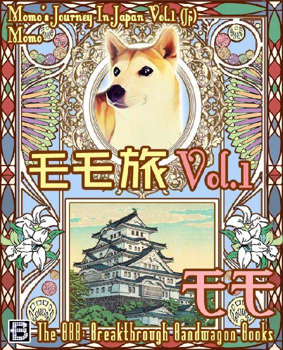
工刀: なるほど。キーワードは、どうやら「刹那的に楽しめる瞬間芸」で、画像の有無が、だいぶ鍵を握っているような。パターンが見えてきたような気がします。
流水: あと、どなたが作曲してくださっているのかは知らないですけど、『Towerld』シリーズでは最近、毎回、特典としてテーマ曲をご提供いただいていますよね。The BBBウェブサイトの『Towerld』のeBookページで、無料でお聴きいただけるわけですが、中には数十分の超大作楽曲もあったりして。
穂高: 数十分の音楽が特典なのですか！それは、すごいな......。
流水: 個人的に、その特典音楽も、もろ好みで毎回嬉しい限りなのですが、特典音楽でどこまで小説読者を呼べるかは、まだちょっと予想できていないんですよ。音楽好きと小説好きって違うような気もしますし。
工刀: 違うからこそ、意外な客層を引き寄せられるかもしれない、というのはあるかもしれないです。ただ、毎回提供される曲が大作主義じゃないですか。20分だったり30分だったり。
穂高: じっくり聴く必要がありそうですね。
工刀: さっきの長文離れじゃないんですけど、音楽の世界でも、最近ヒットしている曲が80年代、90年代の曲に比べて、短くなってきているらしいんです。昔は４分くらいだったのに、最近は平均して３分半だったり、３分切ったりとか。これも最近のリスナーのAttention Spanが短い、長い文章、長い音楽を敬遠する傾向を反映しているらしいんですよ。最近の音楽の聴き方も、昔ならLPとかSPのレコードを買って、音楽をかけて、正座してじっくり聴く、というやり方だったんですが。ウォークマンが登場してから、家の外で聴くようになって、最近はネット上でダウンロードして、短い曲を無限ループする傾向にあるらしいんです。音楽も長いのじゃなくて、短いのが好まれているんじゃないかと。
ターニャ: " ぼくりり" （ぼくのりりっくのぼうよみ）とか、米津玄師（よねづ・けんし）とか、きゃりーぱみゅぱみゅ、とか。今までだったら、Aメロ、Bメロ、Cメロとかあったけど、基本はAメロをAダッシュメロ、Aダッシュダッシュメロ、みたいな。そんなくり返しです。昔、小室哲哉時代は前奏に３分かかった曲もあったんですけどね。
流水: カラオケで嫌がられるやつね（笑）。
ターニャ: そう、それはもうない。最初から前奏ナシでサビ。で、すぐ終わっちゃう、みたいな。
工刀: いきなりサビですか？
流水: でも、たしか、『君の名は。』の挿入歌でヒットしたやつは、間奏が５、６分あるらしいよ。カラオケで入れると大ヒンシュクらしい。
工刀: そこまで長いと、逆に、トイレ・タイムに使えるんじゃないですか（笑）。
流水: ぼくは、昔はＪポップが中心でしたけど音楽が大好きで、CDを買いまくっていたんです。でも、一時期以降は、YouTubeで新しい音楽をチェックして、気に入ったら曲単位でiTunesでダウンロードするのがメインになりました。CDでアルバムを買うというより、曲単位で購入してダウンロードするようになって。The BBBの場合は、現在の音楽業界のように、たくさんの小説を用意して、適当に選んで買っていただく、というより、今は、特定のシリーズを中心に進めているようなところがありますが。なので、The BBB全体としては、瞬間芸とは違う方向でやっている、ということになるかと思います。
工刀: たしかに、世の中の傾向に合わせるのも、ひとつの方向性ですけれども、それと同時に、株での取引で使われる、"逆張りの法則" というのもあります。あえてトレンドと逆方向に行って、で、世の中のトレンドがまた長文とか長い曲の時代に入った時に、自分たちがそうした作品のストックをたくさん用意して待ち構えておく、みたいな。ブームを追う逆で、そっちの方向を目指すのも、ひとつの選択肢かもしれません。
流水: それは、あると思います。The BBBのエースの森博嗣（もり・ひろし）さんがよくエッセイで書かれているんですが、彼は人生の無数の選択で、いつもマイナーなほうを選び続けてこられた方なんです。それを貫いたことで唯一無二の個性を確立して、森さんは最終的に、誰よりも成功されたんです。
穂高: まさに、逆張りで成功されたんですね。
流水: たしかに、逆張りは、当たった時は、でかいんですよね。まあ、日本人の小説を英訳して発表している時点で、The BBBは最初から逆張りとも言えますけれど（笑）。『Towerld』にしても、大作路線の我が道をひたすら突き進んでいて、まさに逆張りですよね。流れが来たら無敵ですよ。
工刀: 流れが来るのは500年後くらいですかね？人類、滅んでるんじゃないかな（笑）。
流水: 穂高さんに『百名山ピークハント』を続けていただくためにも、The BBBを続けていかないといけないんで。仮にThe BBBが消滅したら、穂高さんの連載の場がなくなっちゃいますからね。
穂高: それは困ります（笑）。
工刀: お互いにお互いを盛り上げる、みたいな。
流水: そのためにも、毎年こうしてキャスパで議論して方向性を微調整していくのは、良いことだと思います。ほかの作品の話もすると、積木鏡介さんの『都市伝説刑事』シリーズは、この１年のあいだに「事件５」となる「学校の七不思議」３部作が完結しました。３部作が完結する時には、それ以前の既刊もすべてダウンロードされたんです。だから、シリーズものは当たった時に強いな、と改めて思いました。『Towerld』とか『The Gifted』は今のところ終わりがまったく見えないんですけれど、『都市伝説刑事』シリーズは、積木さんが最初から全６作と宣言されているんです。全６作のうち５作めまで到達したから盛り上がった、というのがひとつと、５作めが３部作で、その３部作が完結したから盛り上がった、という二重の側面がありました。秋月さんには、『The Gifted』の大目標がないので、積木さんみたいにラスボスを出したらいいんじゃないですか、と言い続けていたら、来年３月か５月に刊行予定の『The Gifted Vol.8』では、ついにラスボスが出てきます。
穂高: おおーっ、ラスボスですか。それはすごい！
流水: 『The Gifted』は、今までは大目標がなかったんですけど、ラスボスが出てきた瞬間、急に作品全体が引き締まるんです。"ラスボス効果" というか、心理学でも初頭効果と終末効果というのがあって、時間を限定すると、その最初と最後は絶対に盛り上がるんです。『Towerld』や、ほかの作品でも使えるかもしれないですね。
工刀: ラスボスにせよ終わりにせよ、それは必要だと思います。たとえば、最近、よく映画化されているMarvelやDCのアメコミで私が昔から不満に思っていたのは、アメコミって基本、終わりがないんですよ。たとえば『北斗の拳』ならカイオウが倒されて完結、みたいな終わりがあるんですけれど、アメコミって、終わりがないんですよ。読むほうもダレて、買う気を失くしちゃって。だから、『Towerld』にも、終わりが必要かなと。
流水: 『Towerld』は、でも、定期的に麻薬王とか屈折王などの強敵が出てきて、積木さんで言うところの「学校の七不思議」３部作のような "シリーズ内シリーズ" は何回か完結しているんですよね。あと、森博嗣さんの作品は、ずっと好調なのですが、『スカイ・クロラ』シリーズを毎年３分冊にしていますので、毎年、完結する節目がくる、という。その仕組みがうまく機能しているのかも、とは感じています。
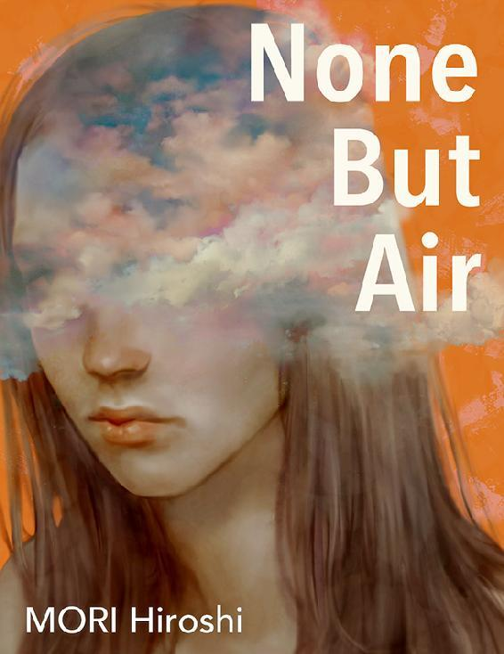
工刀: 『Towerld』は、塔の世界が巨大すぎて、全体として、ぼやけちゃってるかな、という気がしないでもないですが。エージェントとしての客観的な立場から言わせていただくと、ですが。
流水: 『Towerld』や『The Gifted』について、ひとつ言えるのは、いつ終わるかわからない、シリーズ全体のボリューム感が、まだイメージできないんです。穂高さんの『百名山ピークハント』が優れているところは、最初から "ぜんぶで100" と、わかっていることなんです。スケールはでかいですが、100以上には絶対ならないので。
穂高: なるほど。たしかに、その通りですね。
ターニャ: 終わりがわかっている安心感が、あります。置いてきぼり感がないの。
流水: 世界遺産を巡（めぐ）るモモのシリーズでも、世界遺産は、毎年増え続けているとはいえ、それでも、全体の数は決まっていますからね。終わりは、あるわけです。
工刀: 『Towerld』については、奇抜な作戦で今すぐセールスを高めるとか、そういうことは考えないほうがいいのかもしれない。
流水: たしかに、完結してから人気が出るケースもありますからね。
ターニャ: 『Towerld』は、The BBBの中の『グイン・サーガ』的な存在になってほしいんですよ。私としては。
流水: いいね。それは、いいたとえだ。
ターニャ: 長く、長く、ここまで連載を続けてるぞ、というのを売りにしたほうがウケるんじゃないかな。工刀さんと穂高さんは、栗本薫（くりもと・かおる）先生の『グイン・サーガ』は知っていますか？
工刀: たしか、10年くらい前に亡くなられましたよね。
流水: 『グイン・サーガ』は100巻以上続いていたシリーズですので、なかなか新たに入りづらい面もあると思うのですが、それでもやはり１巻は読まれ続けて、たしか、１巻だけでミリオン・セラーになっていたはずです。
工刀: 知り合いの日本人に読んでいた人がいて、「さすがにストーリーが長くなりすぎたかも」という意見は聞いたことがあります。
ターニャ: その長くなりすぎたところが、『グイン・サーガ』の魅力なんですよ。
流水: 逆張りで言うと、『Towerld』も、そこを目ざすのはアリだと思う。
ターニャ: なので、The BBBの『グイン・サーガ』を目ざして、本当に壮大な英雄譚にしていただきたいです。
工刀: 『宇宙英雄ペリー・ローダン』(Perry Rhodan)を目ざし、複数の作家を巻き込むのも手かも知れません。でも、私、それを誰に伝えればいいのか......。
流水: とりあえず、神狩り博士にメールしておけばいいんじゃないですか。
工刀: ああ、でも、返事がこないんですよ。神狩り博士が実在するかどうかも、あやしくなってきてるし。
流水: でも、The BBBの『グイン・サーガ』を目ざす、という目標が定まった瞬間、急に印象が良くなった気がする。知らない人には伝える必要があるけど。
穂高: 私は知らなかったのですが、その小説は、100巻以上も出てるんですか？
ターニャ: たしか、130巻までは刊行されたはずです。外伝が22巻で。
穂高: 完結していないんですか？
流水: 途中で著者がお亡くなりになってしまいましたからね。栗本薫先生は、ぼくが個人的に尊敬していた作家さんのひとりなので、未完のまま逝去されたのは残念でした。
穂高: 小説のシリーズで150巻というのは、すごすぎて......ちょっと想像できませんね。
流水: あと、The BBB全体の話をしますと、現在の仕組みでは、The BBBの作業量は物理的な限界に達していまして。それを今後どのようにしていけば良いか、という問題もあります。理想は、徐々に規模を拡大できれば良いのでしょうが、現在のセールスはスタッフを増やせるほどのスケールではないので。じゃあ、今の仕組みの中で工夫して何ができるか、なんです。それが最近のThe BBBのいちばんの課題で、この1年も『百名山ピークハント』しか新しいことをできなかったように、結局、同じことしかできなくなっているのが現状で。
工刀: 先ほどからの話としては、画像ありきのコンテンツで、刹那的なものが必要なのか。
流水: 現実問題としては、誰が何をするのか、ということになりますよね。
工刀: 新しい人に何かやってもらうのか、今いる人たちが何かするのか、ってことですね。
流水: 今、ぼくと工刀さんが、通常のThe BBBの作業のスキマ時間に進めているのは、ぼくが今年刊行した『純忠（すみただ）日本で最初にキリシタン大名になった男』という歴史長編の英語版、『SUMITADA』シリーズです。不定期刊行で全６巻、１巻は無料で、最終巻には書き下ろしの純忠エッセイもつける予定です。これは、The BBBの来年の目玉企画のひとつになると思います。
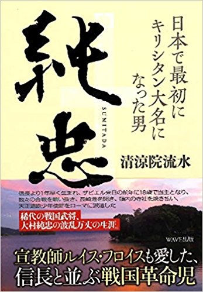
工刀: シリーズをひとつ増やすだけでも、さらに時間に追われるのは否定できないですね。
流水: そう。なので、新しいことも安易には始められないんです。限られた人員と時間を使ってやるわけですから、きちんと戦略がないといけないわけです。とりあえずいろいろやってみます、という人員的、時間的な余裕はないので。The BBBをむりやり盛り上げるのは実は簡単で、The BBBから刊行する小説を読者から募集すると、ある程度は必ず盛り上がるんです。実際、今までも定期的に持ち込みはありますからね。ただ、その読者対応などで時間を奪われる面もあるので、それだけ時間と労力をかける価値があるかどうかで。まだ実行する決意をするまでには至っていないです。
工刀: 読者から小説を募集するにしても、誰がチェックするのか、誰が選ぶのか、という話になりますもんね。
流水: 読者投票で選ぶにしても、システム的なことも含めて、その仕組みづくりを考えないといけませんし。
工刀: ４コマ漫画とか線画ならチェックしやすいのかもしれませんが。小説をガッツリ読むよりは。
流水: まあ、でも、われわれは漫画に積極的に取り組むグループではないですからね。漫画家ではないので。
ターニャ: 個人的に、『Towerld』の表紙を描かれているポルカDさんのイラストは、４コマ漫画に向いていると思います。カワイイし、刹那的な漫画に向いてる画風では？
流水: それを言えば、理想は『Towerld』のコミックをポルカD氏にやってもらうことなんですが、カイ・チェンバレンが４コマ１話描くのに24時間かかっていたように、漫画は、やっぱり描くのに時間がかかるんですよね。瞬間芸として、１コマずつ出していくならアリかもしれないけれど。
ターニャ: キャラを１体、描いてしまって、それをモモのシリーズみたいに使い回しをすればいいのかもしれない。
流水: 画像といえば、穂高さんに以前、『百名山ピークハント』の連載用に動画をいただいたじゃないですか。eBookに動画は入れられないのですが、Facebookでの連載時に公開した動画です。おぼえていますか？
穂高: はい。それは、もちろん。
流水: 今後も連載で動画はあっても良いと思います。ただ、『百名山ピークハント』は順調ですので、あまり心配はしていないんですけどね。山好きと小説好きは違うので、The BBBとしては、今はまだうまく関連づけられていなくて。
穂高: たしかに、山好きが、皆さん小説を読まれるわけではないですよね。
流水: あと、皆さんに意見を伺ってみたいのは、このキャスパについてです。去年は５周年ということでリアル・イベントを日本で開催して、そこそこ盛り上がったと思うんです。リアル・イベントを開催してThe BBBを盛り上げるのは良いことではあるのですが、今のところ、それが日本人を盛り上げるためだけになってしまっていて。でも、The BBBは本来は英語圏に向けて発信しているプロジェクトなんですよ。このバーチャル・イベントについては、テキストを英語と日本語両方で刊行し、音声は英語で公開するので問題ないのですが。ぼくが以前から考えているのは、リアル・イベントをくり返して、まず日本人にしっかり盛り上がってもらい、その熱気が海外に伝わることを目ざすべきなのか。それとも英語圏を最優先し続け、まず海外でウケることを目指すのか。海外の読者も大切にしたいのですが、現実問題としては、今は日本人の読者がいちばん多いですからね。まあ、The BBBは参加者の大半が日本人なので、当然かもしれませんが。
工刀: リアル・イベントも良いのですが、地域限定になって海外の方には何の関係もなくなってしまうと、問題あるかもしれません。このような座談会を無料コンテンツとして発信したほうが、海外の方にも広く届く点は良いですね。
流水: この座談会は、誰でも音声を聴けて、テキストでも読めますからね。
穂高: 東京オリンピックで、海外の方はだいぶ日本に注目していますよね。そうした層に向けてThe BBBで仕向けるようなコンテンツなり仕組みがあると、オリンピックのために海外から来られた時に盛り上がりそうですけど。
工刀: 東京オリンピックねぇ......いつの間にやら、近づいてきましたね。
ターニャ: "The BBB 2020" みたいなキャンペーンをやるとか。2020の数字にこだわった短編を出す、とか。
流水: 『Towerld』は来年Level 0020になるので、ちょうどいい感じですね。
ターニャ: 穂高さんも、標高2,020メートルの山に登るとか。
穂高: 百名山で、その標高のものがあったかな......（笑）。
流水: 穂高さんも、来年早々には連載で20座めに達しますからね。
ターニャ: 秋月さんはグルメ連載の『The Sifted（ザ・シフティッド）』で2,020円のランチを食べる、とか。
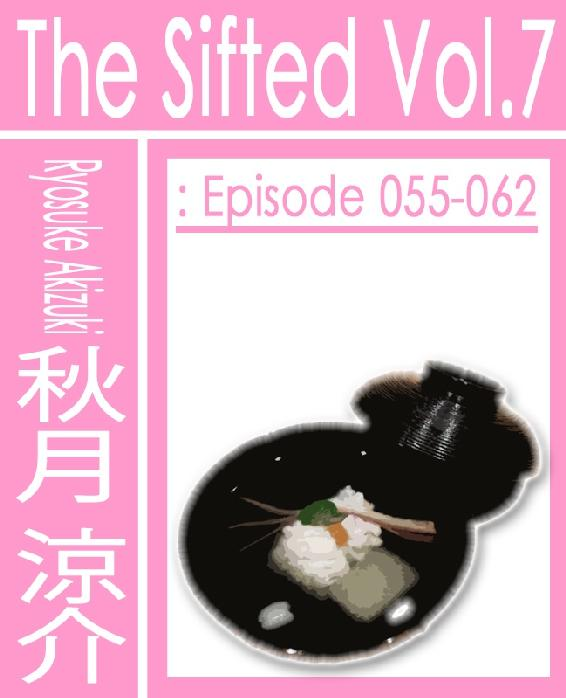
穂高: 数字にこだわるのは、面白い気がしますね。
流水: 2017年にスタートした、ということで『百名山ピークハント』の最初の山には、標高2,017メートルの雲取山（くもとりさん）が選ばれましたからね。
工刀: 2020年をキーワードに盛り上げていく、というのが方向性のひとつとして。あと、森さんの『スカイ・クロラ』シリーズだと、海外読者の多くは劇場版アニメから入って、存在を知っているんですよね？
流水: アニメで以前から知っていた方が多いようですね。
穂高: やはり、アニメは強いんですね。
ターニャ: あと、『Towerld』のAudio bookは？
流水: そう、それを聞きたかったんです。工刀さん、Level 0002のAudio bookの編集にずいぶん時間がかかっているようですが。ノイズ消去にこだわっているんでしたっけ？
工刀: そうですね。ノイズが、どうしても気になってしまって。それを気にしなくていいなら、そんなに時間がかからないんですが。
流水: ぼくは、気にしないですね。
穂高: 自分も、まったく気になりません。
ターニャ: 気になる読者の方もいらっしゃるかもしれませんし、工刀さんのこだわりも、わかります。
流水: 読者サービスの無料コンテンツですから、少々のノイズなら、誰も怒らないと思いますよ。
ターニャ: 音声さえあれば、画像をつけてYouTubeにすぐアップしますよ。
流水: Level 0002から女性キャラも出てきて、Audio bookでは女性ヴォイスが使われているとのことなので、Level 0001より、だいぶキャッチーなものになると思います。Audio bookのLevel 0002と0003が出たら、『Towerld』は、かなり期待できると思います。
工刀: Audio bookの優先順位を、もう少し高くしたほうが良さそうですね。
流水: では、最後にひとりずつ来年の抱負をしゃべって、今年の「Cast Party 2018」の締めとしたいと思います。まず、ぼくから。The BBBは、この１年、『百名山ピークハント』以外は、ほとんど新しいことができなかったので、来年は新しいことをひとつでも、ふたつでも、やりたくて。とりあえず英語版『SUMITADA』シリーズをきちんと刊行スタートすることが最大の目標です。それと、Towerld Level 0020の時に刊行予定のコンプリート・ガイドも、新しい試みになるはずです。
ターニャ: モモとは別に、私も何か新しい挑戦をしてみたいと思います。ホラーにしようかな。
流水: 例の「肝試し」？
ターニャ: 「本当にあったターニャの怖い話」とか。
工刀: 「３行肝試し」とか？書くのが大変そうだけど。
穂高: 怖い話は、興味ある人は、けっこういそうです。自分も聴きたいですね。
ターニャ: 本当の話なら、特に良いかもしれませんね。
流水: 工刀さんの来年の抱負は？
工刀: Audio bookのほかには、神狩り博士に連絡して『Towrld』をきちんと継続してもらうことと、音楽の短い曲を小出しにできたらいいな、とは思っています。
流水: 『SUMITADA』の校正も、お願いします。
工刀: 『SUMITADA』は極めて重要度が高いと、私も思っています。今まで森博嗣先生の『スカイ・クロラ』シリーズを流水さんが翻訳されて、私が校正させていただいておりますが、『SUMITADA』は流水さん本人が日本語で書かれたものをご自身で英訳されているので、単なる翻訳ではなく、バイリンガル小説家としての活動の重要な第一歩になると思います。ご自分で日本語と英語を両方書かれるのは、『King In the Mirror』以来、久しぶりですよね？私が『SUMITADA』を途中まで校正させていただいてる感触として、ほかの作家さんの作品を流水さんが英訳された場合と比べて、英文のレベルとかクリアさが段違いだと感じています。これは、最初から英文を想定して日本語の文章を書かれたから、かもしれませんね。
流水: そのように評価していただけると、たいへん嬉しいです。
工刀: もちろん、森博嗣先生の『スカイ・クロラ』シリーズがThe BBBの最重要コンテンツである事実は変わりませんが、バイリンガル小説家としての流水さんの大きな前進という意味において、『SUMITADA』の重要度は特筆に値すると思います。
流水: ありがとうございます。では、最後に本日のスペシャル・ゲストの穂高さんからも、来年の抱負を、お願いします。
穂高: 引き続き、連載はできるだけ切らさないように計画を立てて登っていくのと、最近、ウェアラブル・カメラを購入して、19座めの山で初めて使いました。今までのカメラでは撮れなかったような写真とか動画も撮れましたので、お楽しみに。
流水: それは早く拝見したいです。
ターニャ: 登っている最中の動画も見たい！
穂高: あとは、前日の夜とか、当日に山小屋に泊まる時、満天の星がすごいんですけど、あまり写真には綺麗に写らないので。星の写真にも今後は力を入れてみたいな、というのはあります。
流水: ほかの登山者はいると思うんですが、山頂の360度の動画などは観てみたいです。
穂高: それ、ちょうどこの前、撮ってきました。そういうところも意識していければ、と思います。
流水: そんな感じで、読者の皆さん、2019年もThe BBBを、よろしくお願いいたします。この場の皆さんも、本日は、ありがとうございました。
穂高・工刀・ターニャ: ありがとうございました!!
（この「 Cast Party 2018 」は、 The BBB: Breakthrough Bandwagon Books のオリジナル作品として、 2018 年末に収録されました）